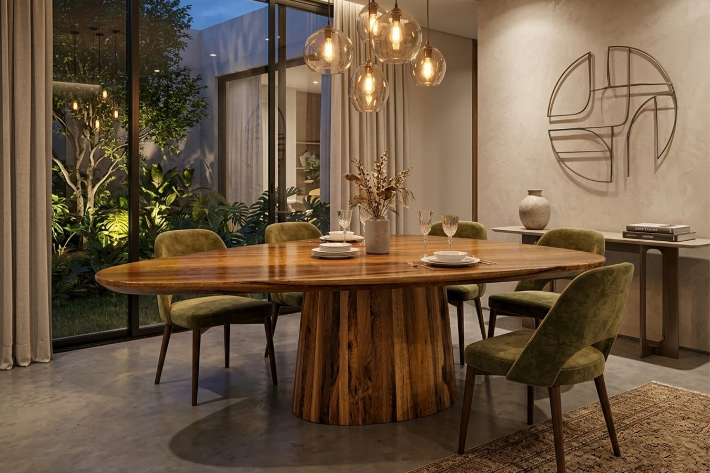

Onde a robustez da madeira
encontra a elegancia do design.
Uma obra-prima em madeira maciça. Com contornos orgânicos e uma imponente base ripada, cada veio da Canela Preta conta uma história desenhada para gerações.


O rigor arquitetônico
por trás do orgânico.
A assimetria perfeita não nasce do acaso, ela é milimetricamente calculada. Onde os olhos veem apenas fluidez poética, reside a mais pura precisão estrutural. Cada raio de curvatura e o distanciamento exato da base foram desenhados para garantir estabilidade absoluta e uma proporção visual perfeita. É o casamento definitivo entre o brutalismo da madeira e o rigor do design autoral.


O rigor arquitetônico
por trás do orgânico.
A assimetria perfeita não nasce do acaso, ela é milimetricamente calculada. Onde os olhos veem apenas fluidez poética, reside a mais pura precisão estrutural. Cada raio de curvatura e o distanciamento exato da base foram desenhados para garantir estabilidade absoluta e uma proporção visual perfeita. É o casamento definitivo entre o brutalismo da madeira e o rigor do design autoral.
A experiência definitiva
em cada detalhe.
Estabilidade Inabalável
A robustez da base ripada não é apenas uma escolha estética. Ela atua como um pilar arquitetônico, concentrando o centro de gravidade da peça. O resultado é uma mesa que não sofre oscilações, oferecendo segurança e conforto absolutos, não importa de qual lado o peso seja apoiado.
O Fim das Cabeceiras
O design orgânico transforma a dinâmica das suas recepções. Sem quinas vivas ou hierarquias de lugares, a fluidez do tampo aproxima as pessoas. Ele permite um contato visual contínuo entre todos os convidados e acomoda lugares extras com uma naturalidade que mesas retangulares jamais teriam.
Superfície Vitrificada
O calor natural da madeira sob uma barreira de alta proteção. O acabamento em alto brilho não apenas espelha a iluminação do seu ambiente de forma deslumbrante, mas cria uma blindagem invisível contra líquidos e desgastes diários. Um luxo feito para ser usado, sem a necessidade de preocupações.
O tempo esculpe
a exclusividade.
Antes de ser o centro das suas melhores memórias, ela foi história na natureza. A Canela Preta é uma madeira nobre, de crescimento imponente e silencioso. Cada veio, cada textura que você toca hoje, levou décadas para ser forjado. Extraída com respeito e eternizada pelo design, esta não é apenas uma mesa — é uma fração do tempo em sua forma mais pura.

Assinatura da Terra
Cada veio da Canela Preta é uma digital única. Um mapa geológico desenhado pelo tempo.
O Centro da Atenção
A mesa assume o protagonismo da sala de jantar, harmonizando-se com a arquitetura ao redor.


Ritmo e Estrutura
O brutalismo da madeira maciça traduzido em marcenaria de precisão. A base ripada cria uma elegancia constante, conferindo uma leveza inesperada à sua robustez imponente.